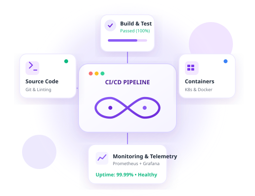

Architecting Resilient
CI/CD & Cloud Systems
Welcome to my DevOps Learning Journey. Bridging the gap between development and operations through declarative infrastructure, automated testing, container orchestration, and continuous observability.
6+
Production Setups
100%
Automated Pipelines
99.9%
Availability Focus

From Code to Cloud Infrastructure
A methodical expedition into modern DevOps practices, site reliability engineering, and infrastructure automation.
Cultivating Automation, Quality, and Resilience
My journey into DevOps started with a simple conviction: software delivery should be dependable, repeatable, and fast. Rather than manual server setups and firefighting deployments, I strive for self-healing systems, immutable container images, and automated pipelines.
Every project in this portfolio documents an iterative milestone—from mastering Linux kernel basics and Bash automation, to orchestrating multi-region Kubernetes clusters with Helm and ArgoCD GitOps workflows.
DevOps Toolchain & Expertise
Tools, cloud platforms, and methodologies mastered along my continuous engineering path.
CI/CD & GitOps
Pipelines & Delivery Automation
Designing multi-stage automated pipelines with quality gates, automated testing, container packaging, and declarative GitOps synchronization.
Containers & K8s
Cloud Native Packaging & Scaling
Building production-ready, minimal Alpine container images and managing resilient Kubernetes clusters with Helm charts and Ingress controllers.
IaC & Cloud
Cloud Architecture & Provisioning
Codifying cloud resources across Amazon Web Services with reusable Terraform modules, S3 remote state locking, and configuration management.
Observability & SRE
Telemetry, Metrics & Monitoring
Comprehensive monitoring with Prometheus scraping, Grafana dashboards, Alertmanager notification routing, and log aggregation.
Linux & Scripting
Systems Administration & Scripting
Automating operational tasks with Bash shell scripts, Python utility modules, Cron scheduling, and solid Linux server administration.
DevSecOps & Quality
Security Hardening & Compliance
Shifting security left into early pipeline stages, enforcing least privilege permissions, secrets management, and automated scanning.
DevOps Projects & Pipelines
Hands-on projects loaded asynchronously via JavaScript fetch() from
data/projects.json.
Get In Touch
Have questions about a pipeline setup, want to talk cloud architecture, or collaborate on DevOps automation? Send a message!
Let's Discuss DevOps & Cloud Infrastructure
Whether you are looking to optimize continuous deployment, stabilize container clusters, or audit infrastructure code, feel free to reach out.
Email Address
GitHub Repositories
LinkedIn Profile
Location
Global / Remote (Cloud-Native)